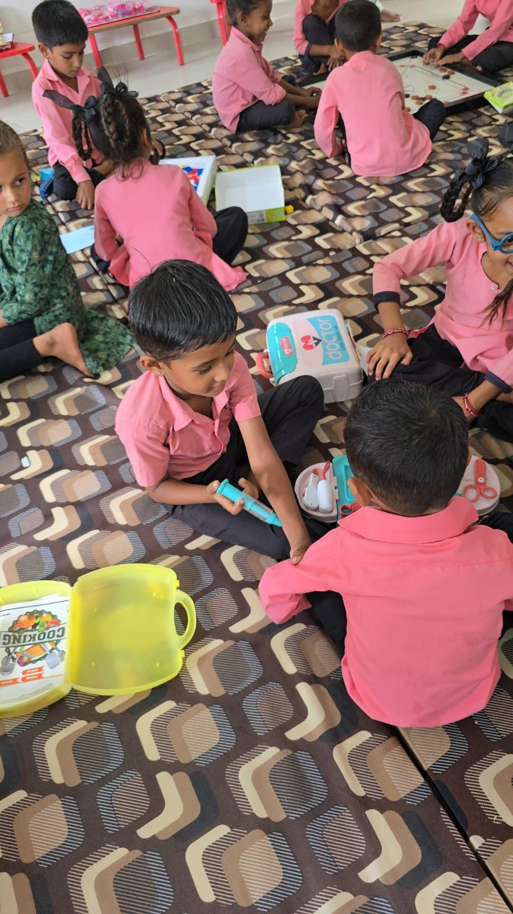
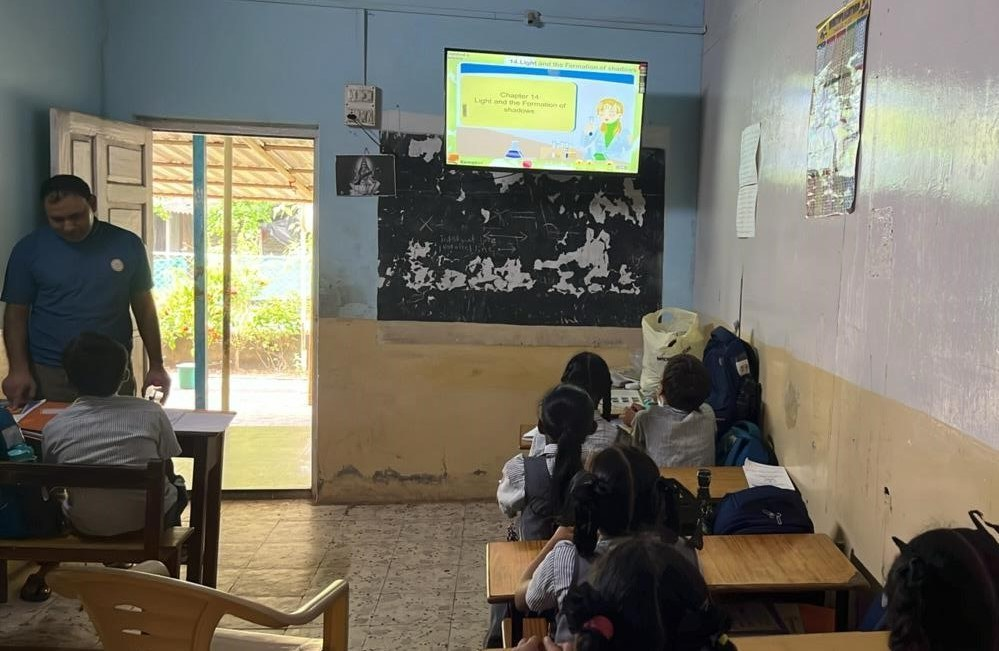
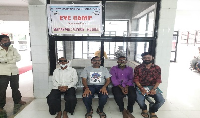
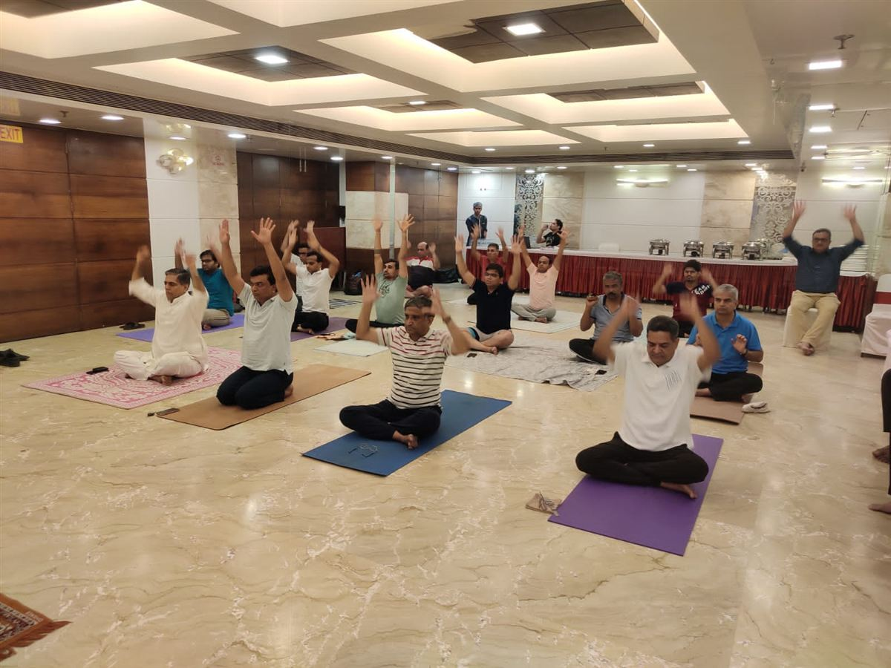

Our Work
Six Years of Seva, One Community at a Time
From toy libraries to digital classrooms to medical camps, every MaBap Foundation program carries the same purpose forward — service as devotion.
See Our Full Timeline →
Toy & Games Libraries
Since 2023, MaBap Foundation has set up joyful, well-stocked play libraries inside schools across Maharashtra, Gujarat and Bihar — giving tribal and underprivileged children regular access to toys and games that build motor skills, teamwork and imagination. Twenty-six libraries and counting, including our Silver Jubilee 25th library and our first urban library in Kandivali, Mumbai.

Digital Classrooms
In partnership with Raj Borax Pvt. Ltd. under its CSR programme, MaBap Foundation has installed 15 digital classrooms in Talasari, Maharashtra — bringing smart-screen, multimedia lessons to over 1,500 students every year.

Medical Camps
From eye camps and cataract surgeries to acupuncture treatment and COVID-era health guidance, MaBap Foundation has organised medical camps for poor and tribal communities since 2020 — bringing basic healthcare within reach of those who need it most.

Community Support
Food-grain distribution, disaster relief, and direct support for families in need — including funding a home for a nomadic family in Morbi, Gujarat, and most recently delivering ration kits and clothing to flood-devastated villages near the Varoli River in Umargam (July 2026) — reflect MaBap Foundation's commitment to help wherever the need is greatest.

Yoga & Spiritual Discourses
Annual International Yoga Day celebrations and spiritual discourses on Sanatan Dharma connect devotees with the practices at the heart of Babaji's teachings — open to all who seek to learn.